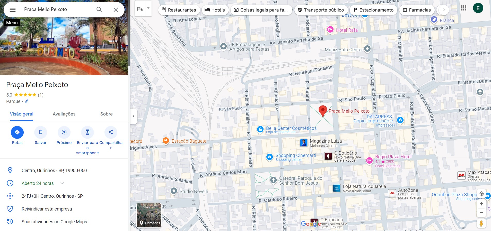

Motivos para Visitar a Praça Mello Peixoto
- Ambiente Agradável: A praça é cercada por árvores e áreas verdes, oferecendo um espaço relaxante para caminhadas e piqueniques.
- Eventos Culturais: Frequentemente, a praça abriga feiras, festivais e apresentações artísticas que celebram a cultura local.
- Centro de Convivência: É um local de encontro para amigos e famílias, promovendo interações sociais e a comunidade.
- História e Tradição: A praça é um importante marco histórico, refletindo a identidade e a memória da cidade de Ourinhos.
- Atividades ao Ar Livre: Com espaços para atividades físicas e lazer, a praça é ideal para quem gosta de praticar esportes ou simplesmente relaxar ao ar livre.
- Proximidade de Comércio: A localização da praça facilita o acesso a lojas, cafés e restaurantes nas redondezas, tornando a visita ainda mais agradável.



Quer saber mais?
Assista ao vídeo no YouTube